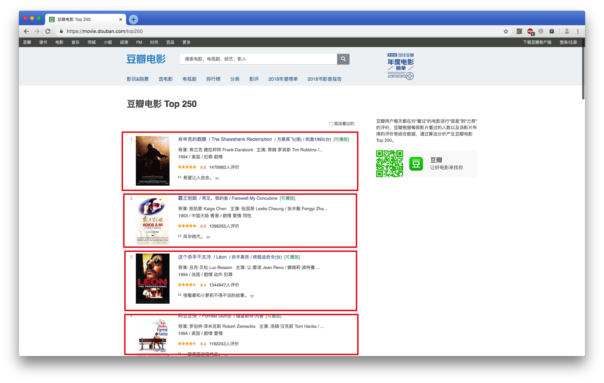

元素定位的方法
1. 元素定位的基本使用方式
为了能够点击某个按钮，此时我们就需要准确无误的定位到需要的元素
主要分为2种
- 单个节点（返回是一个对象）
find_element_by_idfind_element_by_namefind_element_by_xpathfind_element_by_link_textfind_element_by_partial_link_textfind_element_by_tag_namefind_element_by_class_namefind_element_by_css_selector
- 多个节点（返回是一个列表）
find_elements_by_idfind_elements_by_namefind_elements_by_xpathfind_elements_by_link_textfind_elements_by_partial_link_textfind_elements_by_tag_namefind_elements_by_class_namefind_elements_by_css_selector
2. 获取单节点demo
import time
from selenium import webdriver
# 获取浏览器驱动对象
browser = webdriver.Chrome()
# 打开指定URL
browser.get('http://news.baidu.com/')
# 定位搜索框
ret = browser.find_element_by_id('ww')
print(ret)
ret = browser.find_element_by_css_selector('#ww') # 查询id为ww
# ret = browser.find_element_by_css_selector('.word') # 查询class为word
print(ret)
ret = browser.find_element_by_xpath("//input[@class='word']")
print(ret)
time.sleep(3)
browser.quit()
运行结果：
3. 获取多节点demo

import time
from selenium import webdriver
# 获取浏览器驱动对象
browser = webdriver.Chrome()
# 打开指定URL
browser.get('https://movie.douban.com/top250')
# 定位25个电影信息
ret = browser.find_elements_by_css_selector('.item') # 查询class为item
print(ret)
ret = browser.find_elements_by_xpath("//*[@class='item']")
print(ret)
time.sleep(3)
browser.quit()
4 注意点
find_element和find_elements的区别是：前者返回一个对象，后者返回一个列表
by_link_text和by_partial_link_text的区别：前者匹配全部文本，后者包含某个文本

小结
- 根据xpath定位元素:
driver.find_elements_by_xpath("//*[@id='s']/h1/a") - 根据class定位元素:
driver.find_elements_by_class_name("box") - 根据link_text定位元素:
driver.find_elements_by_link_text("下载豆瓣 App") - 根据tag_name定位元素:
driver.find_elements_by_tag_name("h1") - 获取文本内容:
element.text - 获取标签属性:
element.get_attribute("href")